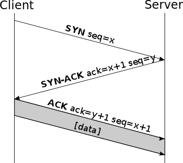

Bandbreite: Frequenzspektrum eines Übertragungskanals. Z.B. ergeben sich für WLAN mit einer Trägerfrequenz von 2400 MHz und einer Bandbreite von 20 - 40 MHz folgende Kanäle:
| Bandbreite | |
|---|---|
| Kanal 1 | 2400 - 2440 MHz |
| Kanal 2 | 2440 - 2480 MHz |
| … | … |
Server: Ein Server ist eine Software, die bestimmte Dienste anbietet.
triple play: Dienste, die in Deutschland über die Telefonsteckdose angeboten werden: Telefonie, Internetzugang, Fernsehen
ISO: International Organization for Standardization
OSI: Open System Interconnection
ISDN: Integrated Services Digital Network
GSM: Global System for Mobile Communication
PSTN: Public Switched Telephone Network
TCP: Tranmission Control Protocol
UDP: User Datagram Protocol
Netzwerkarchitektur: Ein System aus Schichten und Protokollen heißt Netzwerkarchitektur. Das OSI-Referenzmodell ist eine Netzwerkarchitektur.
Protocol stack: Die Liste von Protokollen (ein Protokoll pro Schicht!), die von einem System genutzt wird nennt man protocl stack.
MAC: Medium Access Control
ICT: Information and Communication Technology
Routing: Als Routing bezeichnet man das Finden einer optimalen Route zum Transport von Paketen zwischen End-Systemen. Routing funktioniert über die Erstelleung und kontinuierliche Aktualisierung der routing tables mit next hop Einträgen in Transit- und Endsystemen.
ISP: Internet Service Provider
Network Adress Translateion (NAT): Network Adresstranslation findet statt, wenn Pakete über Netzwerkgrenzen hinaus transportiert werden. Z.B., wenn Pakete aus einem privaten Netzwerk (10.*.*.*) in ein öffentliches Netzwerk transportiert werden. Systeme, die NAT ausführen, werden im Allgmeinen als Router bezeichnet.
Forwarding: Forwarding bezeichnet das Weiterleiten von Paketen in Transitsystemen mit Hilfe von forwarding tables
Maximum Transmission Unit (MTU): maximale Größe einer Übertragungseinheit (packet, frame, sequence, etc.)
Ein Dienst ist eine genau beschriebene Leistung, die ein Protokoll, eine Anwedung oder sonstiges erbrigt und für andere anbietet. Der Begriff Dienst wird daher oft unscharf verwendet:
Ein Protokoll ist die Umsetzung eines Standards in ausführbarer/anwendbarer Form (Protokolle können in Hard- oder Software implementiert werden). Zwischen einem Standard und einem Protokoll gibt es keine klare Trennung. Protokolle können zum Standard werden. Ein Standard kann in mehrerer Protokollen umgesetzt werden.
Ein Protokoll besteht aus Regeln für:
Man unterscheidet (grob): transportorientierte Protokolle und anwedungoreintierte Protokolle
Netzwerkservices werden i.d.R. durch das Zusammenspiel mehrerer Protokolle erbracht. Man spricht von einem protokoll stack. Der protocol stack für den E-Mail Dienst ist z.B:
| SMTP |
| TCP |
| IP |
| Ethernet |
| Manchester Code |
Timeline Diagramme sind eine informelle Art Protokolle darzustellen. In einem Timeline Diagram kann nur ein konkreter Ablauf dargestellt werden (z.B. eine erfolgreicher Handshake). Bsp für ein Timelinediagramm eines TCP Handshake:

Figure 1: Beispiel eines TCP Handshakes
IANA: verwaltete den globalen Pool von IP-Adressen und AS Nummern und vergibt /8 IP-Adressblöcke an RIRs
Regional Internet Registrars (RIRs): verwalten IP-Adressen und AS Nummern in ihrer Region:
im Internet v.a.
Zur Erbringung dieses Service sind nötig:
checksum Feld des UDP und TCP headers)
routing tables enthalten u.a.:
Arten von Einträgen
Das Nachschlagen einer destination address in einer routing table erfolgt mit Hilfe des longest prefix match. D.h. ein Paket wird an den Eintrag in der routing table, dessen Netzwerkpräfix die längsten Übereinstimmung mit der Zieladresse aufweist. Das ermöglich die Aggregation Adressen in routing tables und führt somit zu kleineren routing tables.
Routing Tabellen sind veränderbar durch:
Komponenten